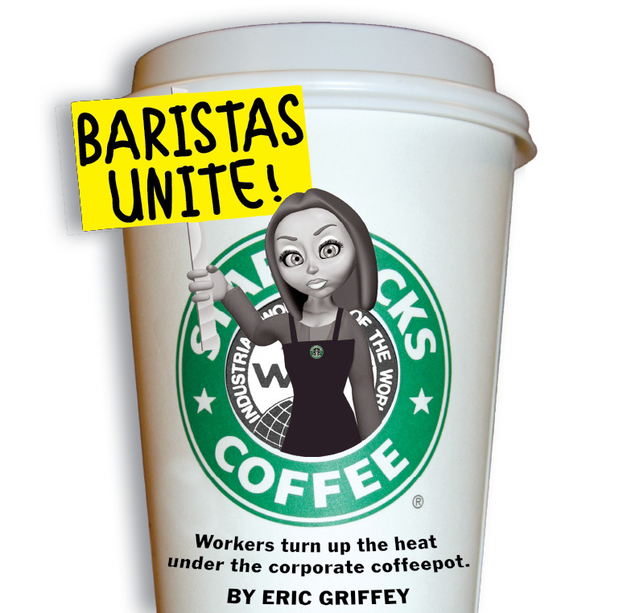
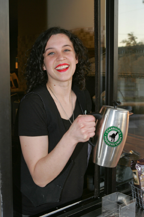

A Cup of Union: Local baristas say the fight for better conditions is uphill but necessary.
Submitted on Thu, 02/04/2010 - 7:10pm
By Eric Griffey - Fort Worth Weekly, February 3, 2010.

In late December, a small group of Starbucks employees blocked the drive-through window at the company's coffee shop at Rosedale Street and 8th Avenue for about 20 minutes, in protest of the rising cost of their healthcare insurance, low wages, and a litany of other issues. The protest signaled that a handful of local baristas had gone public with their association with the Starbucks Workers' Union - and it meant that, for a while on that afternoon, customers had to wait even longer than usual to get a cup of gourmet coffee. coverThe protesters said they didn't intend for the store to lose any business. They saw the move as a symbolic gesture, a message to the corporate coffee giant that they are willing to go to great lengths to improve their working environment. Although the protest hardly measured up to, say, the garbage workers strike in Fort Worth in 1999, it did get the company's attention. Organizers said that the company's top brass now has the Rosedale store under a microscope and that corporate officials visit frequently.
Fort Worth is the sixth city in the U.S. and the first in Texas to associate with the Starbucks Workers Union, which was started in 2004 under the umbrella of the Industrial Workers of the World, a century-old international union that takes a kind of class warfare approach and has had success in organizing in nontraditional industries, from bicycle messengers to food co-op workers.
Michelle Cahill, the group's organizer, said that she and others have seen firsthand the declining morale of their co-workers, as the company has been forced to make changes to cope with hard times.
The unhappy baristas feel as though the company, which is perennially listed on Forbes magazine's "best companies to work for" list, has lost its way, and is becoming more like a fast food chain - concentrating more on moving product than connecting with customers. "There are people in every store in the country who feel that the company isn't what it used to be," Cahill said.
But she said the union's goals have less to do with the overall direction of the company than with mistreatment of workers. Among their demands are better and cheaper healthcare, increased wages, more hours, and better working conditions.
The protesters also allege that, on one occasion, a Starbucks manager at the 8th Avenue store forced an employee to work while she was sick with the H1N1 virus. The group had also demanded a first-aid kit for that store, which Cahill said the company delivered the day after the protest.
A Starbucks spokeswoman said that she knows of no employee who was forced to work while sick with the H1N1 virus and that it is the company's policy that sick employees should not work.

Cahill said that the cost of her healthcare benefits has more than tripled over the last year. In November her premium was around $30 a month. Now, she said, it's more than $100. The increases are exacerbated by average pay rates that hover around minimum wage and the fact that many employees' work hours have been cut. In her store, most of the hourly employees, or "partners," as they are called by the corporation, are being scheduled for less than 25 hours a week.
"There are lot of baristas who are on Medicare [or] Medicaid," she said. "We have several baristas who are pregnant, and they are on food stamps. Some of them try and find second jobs, but because their schedules are never consistent, it really makes that difficult."
"Watching [one] co-worker be forced to serve customers while [she] was sick with H1N1 was the last straw," said Casey Keeling, another union barista and protester. "Something needs to change - in our workplace and in this country."
Starbucks spokeswoman Stacy Krum said that she believes the recently unionized baristas are confined to one store and that the company has adequately addressed their concerns. She also pointed out that only 300 former and current employees are involved in the union, out of 111,000 current and hundreds of thousands of former employees.
"We've taken steps to address their key concerns, believing that we do offer a competitive pay and benefits package, including affordable healthcare for our partners who average 20 hours or more a week," she said.
"It's important to note that although many companies don't offer healthcare coverage to part-time employees, Starbucks has since 1988," she continued. "Because healthcare costs have increased significantly for Starbucks, as they have for most employers, the cost of coverage for our partners increased this year. Our most affordable plan costs $10 a week."
Cahill disputed the idea that the protest was just about the issues at one store. "A lot of the problems we have with Starbucks have to do with corporate: baristas not earning a living wage and having health insurance become unaffordable for the most part," she said.
Starbucks officials said that the former 8th Avenue store manager is no longer with the company and wouldn't elaborate. Employees at that store said he stopped working there shortly after the protest.
Cahill said several employees from other Metroplex stores have joined the union, though they have not made that public. Thus far, only four Fort Worth workers acknowledge joining the unon.
The unionized baristas said Starbucks has gone to great lengths to union-bust in the past. Starbucks has been cited multiple times for illegal union-busting by the National Labor Relations Board. Last year a judge ruled that Starbucks committed more than a dozen violations of the National Labor Relations Act at their New York locations. Filmmaker Robert Greenwall recently made a documentary about the coffee giant's labor-busting ways, titled Stop Starbucks.
Krum denied that Starbucks trains their managers to union-bust. She said it is Starbucks policy to have an open and direct relationship with employees. "Like most companies, we provide training to managers on good human resources practices," she said in an e-mail. "It is not accurate to characterize the training we do with our managers as dissuading partners from joining a union."
A few days after the Fort Worth protest, the company sent the then-store manager and another manager to a class called "Maintaining the Starbucks Atmosphere." Cahill said the managers were taught how to isolate employees and interrogate people about their union involvement.
"It's just interesting to think about how much money they've spend on trying to put the union out, when they just could have given us better healthcare insurance and higher wages," she said.
According to store employees, intimidation efforts at the 8th Avenue coffee shop have consisted mostly of bosses meeting with staffers individually to discuss how they feel about their work environment. Cahill and others said they welcomed the discussion.
The Fort Worth union effort drew national and local attention, with stories in The New York Times, Wall Street Journal, and both the Fort Worth Star-Telegram and The Dallas Morning News.
Cahill said that her store received 30 or so Christmas cards from other Starbucks workers all over the world, encouraging them in their efforts. Another local union has also taken notice of the nascent organization: Teamsters Local 767 invited the four to be the guests of honor at their Christmas party, where they spoke in front of more than 2,000 people.
"This is only the beginning of our recruiting campaign," Cahill said. "Now that we've gone up against Starbucks, we can't just back down."